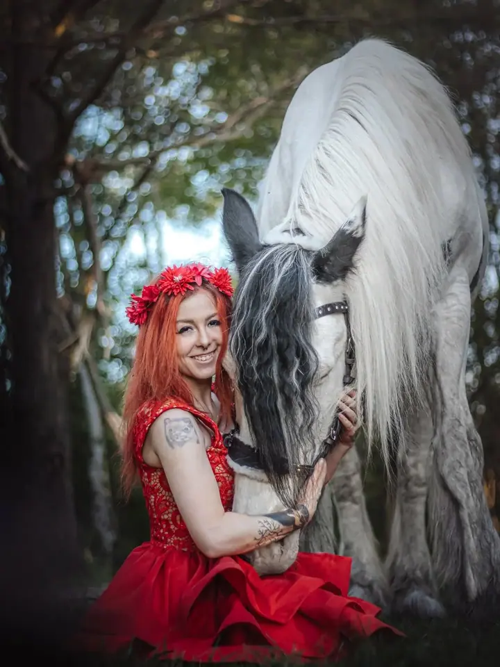
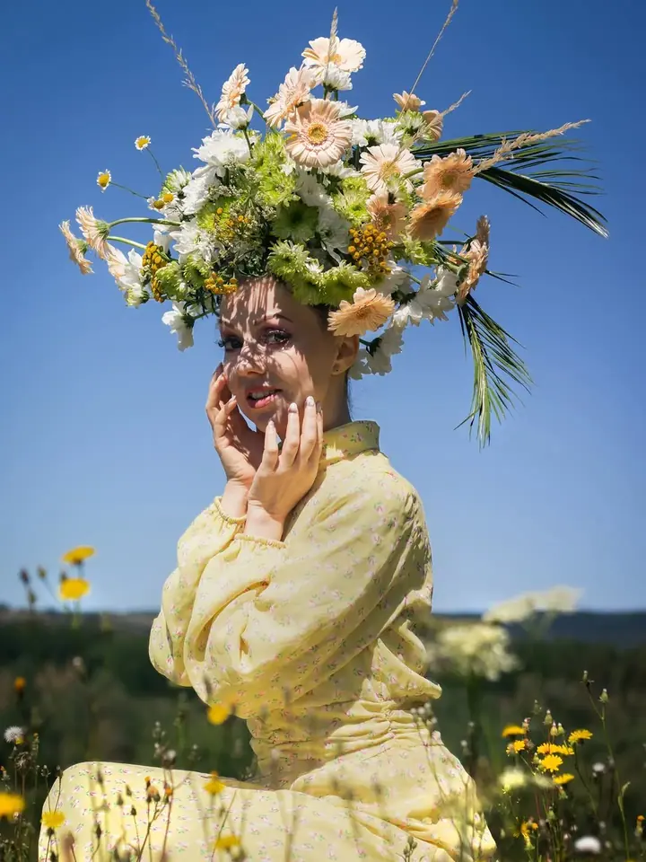
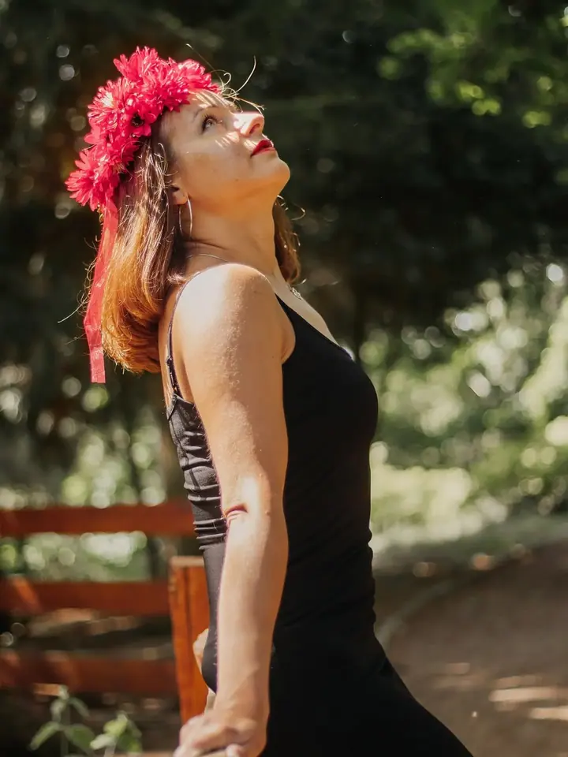

jedna
Emotivní portréty
Přirozené a stylové portréty, které ukážou vaši osobnost. Fotím venku na předem domluveném místě, ráda i s vaším koněm nebo jiným zvířetem, a s pózováním vám pomohu.

Portrétní a fantasy fotografka · Sever Čech, Chomutov

Jmenuji se Simona Dvořáčková a pod značkou Saikouphotos fotím emotivní portréty a fantasy focení na severu Čech. Nejraději fotím ženy, koně a příběhy, které se odehrávají v přírodě.
Více o mně
Co fotím
jedna
Přirozené a stylové portréty, které ukážou vaši osobnost. Fotím venku na předem domluveném místě, ráda i s vaším koněm nebo jiným zvířetem, a s pózováním vám pomohu.
dvě
Kreativní focení v kostýmech oblíbených postav s důrazem na detail a atmosféru. Víly, pohádky nebo příběhové portréty podle konceptu, který spolu vymyslíme.
Elegantní a citlivé snímky, které ukážou krásu těla a vaše sebevědomí. Vše probíhá v bezpečné a příjemné atmosféře, s respektem a diskrétností.
Emocionální snímky nejdůležitějších okamžiků vašeho svatebního dne. Vybrat si můžete samotný obřad, půlden, nebo celý den od ranních příprav po večerní zábavu.
Krása se skrývá i v nedokonalosti.
Za objektivem
Jsem máma malého rošťáka, mileniálka tělem i duší a člověk, který vždycky tíhnul k tvoření. Od malička jsem kreslila a na střední jsem se ponořila do světa anime a temné estetiky, i když to tehdy nebylo zrovna „cool“. Možná právě díky tomu dnes umím vidět krásu i v nedokonalosti a obyčejnosti.
Na pár let mě život zavedl do Anglie. Po návratu a po covidu jsem si řekla: Teď, nebo nikdy. Vyměnila jsem tužku za foťák a od té doby se na svět dívám přes hledáček.
Miluju fantasy, romantasy, dark romance a ten moment, kdy se podaří zachytit opravdové emoce. Jsem introvertka, ale jakmile se rozmluvím, nezastavím se, a smysl pro humor mi taky nechybí. Na focení se proto nemusíte bát, že budete stát sami a nevědět, co s rukama.
Simona
Ozvěte se přes formulář nebo e-mailem a domluvíme se, jaké focení si přejete a kdy by se vám hodilo.
Vybereme místo v přírodě a u tematického focení spolu vymyslíme příběh, kostým a rekvizity.
Focení probíhá v exteriéru v klidném tempu. S pózováním vám pomohu, aby fotky působily přirozeně a uvolněně.
Pečlivě upravené fotky dostanete v online galerii do 2–4 týdnů, u svateb do 3–6 týdnů.
Portfolio
Otázky
Portrétní focení stojí 1 500 Kč. Zahrnuje zhruba 60 minut focení, 10 pečlivě upravených fotografií a online galerii v plném rozlišení.
Vůbec ne. S pózováním vám pomohu, aby výsledné fotografie působily přirozeně a uvolněně.
Fotíme podle předem domluveného konceptu, třeba víly, pohádky nebo příběhové portréty. Cena je 1 500–2 500 Kč podle náročnosti, dostanete 12–20 upravených fotografií a rekvizity zajistíme dle domluvy.
Fotím v exteriéru na severu Čech, na místě, které si předem domluvíme. U svateb je doprava v rámci Chomutova zdarma, mimo Chomutov dle domluvy.
Napište pár vět o tom, co si představujete. saikoudvorackova@gmail.com